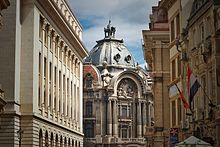
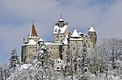
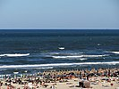

Economy
The The Bucharest Stock Exchange Palace, situated in the capital's historical city centre
In 2019, Romania has a GDP (PPP) of around $547 billion and a GDP per capita (PPP) of $28,189.[284] According to the World Bank, Romania is a high-income economy.[16] According to Eurostat, Romania's GDP per capita (PPS) was 70% of the EU average (100%) in 2019, an increase from 44% in 2007 (the year of Romania's accession to the EU), making Romania one of the fastest growing economies in the EU.[285] After 1989 the country experienced a decade of economic instability and decline, led in part by an obsolete industrial base and a lack of structural reform. From 2000 onward, however, the Romanian economy was transformed into one of relative macroeconomic stability, characterised by high growth, low unemployment and declining inflation. In 2006, according to the Romanian Statistics Office, GDP growth in real terms was recorded at 7.7%, one of the highest rates in Europe.[286] However, the Great Recession forced the government to borrow externally, including an IMF €20 billion bailout program.[287] According to The World Bank, GDP per capita in purchasing power parity grew from $13,687 in 2007 to $28,206 in 2018.[288] Romania's net average monthly wage increased to 666 euro as of 2020,[289] and an inflation rate of −1.1% in 2016.[290] Unemployment in Romania was at 4.3% in August 2018, which is low compared to other EU countries.[291]
Infrastructure

According to the Romania's National Institute of Statistics (INSSE), Romania's total road network was estimated in 2015 at 86,080 kilometres (53,488 mi).[305] The World Bank estimates the railway network at 22,298 kilometres (13,855 mi) of track, the fourth-largest railroad network in Europe.[306] Romania's rail transport experienced a dramatic decline after 1989 and was estimated at 99 million passenger journeys in 2004, but has experienced a recent (2013) revival due to infrastructure improvements and partial privatisation of lines,[254] accounting for 45% of all passenger and freight movements in the country.[254] Bucharest Metro, the only underground railway system, was opened in 1979 and measures 61.41 km (38.16 mi) with an average ridership in 2007 of 600,000 passengers during the workweek in the country.[307] There are sixteen international commercial airports in service today. Over 12.8 million passengers flew through Bucharest's Henri Coandă International Airport in 2017.[308] Romania is a net exporter of electrical energy and is 52nd worldwide in terms of consumption of electric energy.[309] Around a third of the produced energy comes from renewable sources, mostly as hydroelectric power.[310] In 2015, the main sources were coal (28%), hydroelectric (30%), nuclear (18%), and hydrocarbons (14%).[311] It has one of the largest refining capacities in Eastern Europe, even though oil and natural gas production has been decreasing for more than a decade.[312] With one of the largest reserves of crude oil and shale gas in Europe[313] it is among the most energy-independent countries in the European Union,[314] and is looking to expand its nuclear power plant at Cernavodă further.[315] There were almost 18.3 million connections to the Internet in June 2014.[316] According to Bloomberg, in 2013 Romania ranked fifth in the world, and according to The Independent, it ranks number one in Europe at Internet speeds,[317][318] with Timișoara ranked among the highest in the world.[319]
Toursim

Tourism is a significant contributor to the Romanian economy, generating around 5% of GDP.[320] The number of tourists has been rising steadily, reaching 9.33 million foreign tourists in 2016, according to the Worldbank.[321] Tourism in Romania attracted €400 million in investments in 2005.[322] More than 60% of the foreign visitors in 2007 were from other EU countries.[323] The popular summer attractions of Mamaia and other Black Sea Resorts attracted 1.3 million tourists in 2009.[324][325]Most popular skiing resorts are along the Valea Prahovei and in Poiana Brașov. Castles, fortifications, or strongholds as well as preserved medieval Transylvanian cities or towns such as Cluj-Napoca, Sibiu, Brașov, Bistrița, Mediaș, Cisnădie, or Sighișoara also attract a large number of tourists. Bran Castle, near Brașov, is one of the most famous attractions in Romania, drawing hundreds of thousands of tourists every year as it is often advertised as being Dracula's Castle.[326]Rural tourism, focusing on folklore and traditions, has become an important alternative,[327] and is targeted to promote such sites as Bran and its Dracula's Castle, the painted churches of northern Moldavia, and the wooden churches of Maramureș, or the villages with fortified churches in Transylvania.[328] Other attractions include the Danube Delta or the Sculptural Ensemble of Constantin Brâncuși at Târgu Jiu.[329][330]
Bran Castle
Mamaia Black Sea
